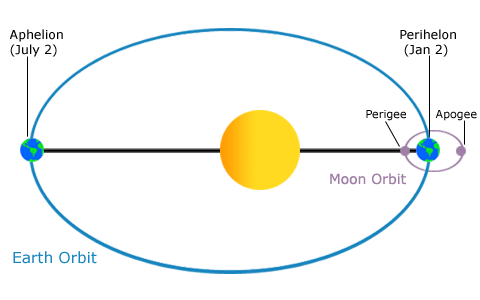

Tidal Currents
Speaker : Apen Shar
ID : 140105112
1. Introduction
What is tidal currents?
Tidal currents occur in conjunction with the rise and fall of the tide. The vertical motion of the tides near the shore causes the water to move horizontally , creating currents.

- When a tidal current moves toward the land and away from the sea , it calls“floods.”
- When it moves toward the sea away from the land , it calls “ebbs.”
- These tidal currents that ebb and flood in opposite directions are called “rectilinear” or “reversing” currents.
2. The Mechanism
AM I WRONG ?
Is it consistent with our common sense ?
The correct Answer
Tidal currents are the only type of current affected by the interactions of the Earth, Sun, and Moon. It just like tides, are affected by the different phases of the Moon.
- When the Moon is at full or new phases, tidal current velocities are strong and are called “spring currents.”
- When the Moon is at first or third quarter phases, tidal current velocities are weak and are called “neap currents.”
Also similar to tides , tidal currents are affected by the relative positions of the Moon and Earth.
Since the observed tide consists not of a single wave, but of the superposition of many tide waves of different frequency and amplitude, it will never fit exactly any of our simple descriptions.
Have you got a idea about HHW & LHW : ) ?
Because of this, we cannot expect the heights of successive High Waters (HWs) or of successive Low Waters (LWs) to be identical, even when they occur in the same day.
Thus, the two HWs and two LWs occurring in the same day are designated as higher and lower high water (HHW and LHW), and higher and lower low water(HLW and LLW). It is likewise only the tidal stream associated with a single frequency tide wave that traces a perfect tidal ellipse.
It is likewise only the tidal stream associated with a single frequency tide wave that traces a perfect tidal ellipse. The composite tidal stream each day traces a path more closely resembling a double spiral, with no two days patterns identical. Also, no tide is ever a purely progressive or a purely standing wave, so that slack water should not be expected to occur at the same interval before HW or LW at all locations
3. The Impact of Tidal Currents
The shape of bays and estuaries also can magnify the intensity of tides and the currents they produce.
The Bay of Fundy in Nova Scotia is a classic example of this effect, and has the highest tides in the world - over 15 meters (Thurman, H.V., 1994).
The daily tidal currents experienced by coastal areas can also have a dramatic effect on estuarine ecosystems.
This series of images shows the remarkable daily rise of waters at the Elkhorn Slough National Estuarine Research Reserve in California.
Elkhorn Slough is a tidally flushed seasonal estuary with little freshwater input. Strong tidal currents scour every major wetland habitat within the estuary, transporting large quantities of sediment into Monterey Bay during each low tide.
At low tides, a muddy plume reaches a mile or more into Monterey Bay.
4. Shallow-Water Effects
Tides in the open ocean are usually of much smaller amplitude than those along the coast. This is partly due to amplification by reflection and resonance.
It is, however, more generally the result of shoaling: as the wave propagates into shallower water, its wave speed decreases and the energy contained between crests is compressed both into a smaller depth and a shorter wavelength.The tide height and the tidal stream strength must increase accordingly.
If, in addition, the tide propagates into an inlet whose width diminishes toward the head, the wave energy is further compressed laterally. This effect, called funneling, also causes the tide height to increase.
MERCI
THANKS
__author__ = 'APEN SHAR'